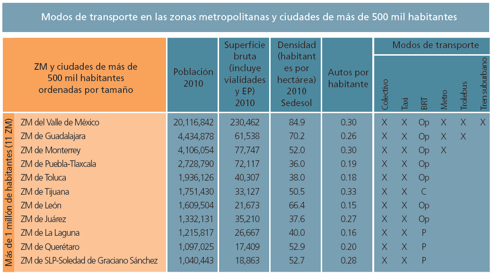

"Una zona metropolitana competitiva es aquella que democratiza su productividad y resulta atractiva para la inversión, pero sobre todo, la que garantiza bienestar y prosperidad a sus habitantes"
Ana Lilia Herrera Anzaldo Presidenta del Grupo Mexicano de Parlamentarios para el Hábitat
Coincidiendo con el Día Internacional de la Madre Tierra, el pasado 22 de abril fue presentado el Reporte Nacional de Movilidad Urbana en México 2014-2015 por parte de ONU-Hábitat y el Grupo Mexicano de Parlamentarios para el Hábitat. En su introducción, Erick Vitrupp (coordinador de ONU-Hábitat para América Latina y el Caribe), destaca la importancia de centrar la movilidad como eje fundamental para el desarrollo urbano, específicamente hacia el transporte público masivo.
El reporte, dividido en 8 capítulos, hace un diagnóstico cualitativo y cuantitativo de la forma en que la sociedad mexicana se mueve en la ciudad; centrándose en el derecho a la movilidad como agente estratégico de la prosperidad urbana.
La falta de integración del transporte con la planeación del desarrollo urbano, dice Vitrupp, es el principal origen de los modelos deficientes de movilidad con los que contamos en México, los cuales no han logrado vincular el desarrollo urbano, la vivienda y el medio ambiente de una forma eficiente y homogénea.
Las ciudades mexicanas son 3D (no en tercera dimensión): dispersas, distantes y desconectadas, y nuestra zona metropolitana de la Laguna no es la excepción. Las políticas de desarrollo de vivienda de las últimas décadas fomentaron el crecimiento horizontal y de baja densidad, lo cual tuvo un impacto directo en la forma en que nos movemos por la ciudad; provocando problemáticas como un alto índice de motorización (251 automóviles por cada mil habitantes en la ZML)i.
El diagnóstico del reporte, considera que las ciudades de entre 500 mil y un millón de habitantes tienen una tendencia similar a las grandes ciudades en respecto al uso (y abuso) del vehículo automotor; la cual es aún más crítica en esta categoría debido al presupuesto limitado para invertir en transporte público. En su mayoría, estas ciudades basan su sistema de transporte público en un modelo concesionado al sector privado, lo cual genera desarticulación y nula planeación en el desarrollo urbano orientado a la movilidad, caso de la ZML.

Fuente: ONU-Hábitat. (2015). Reporte Nacional de Movilidad Urbana en México 2014-2015. Ciudad de México
"Una ciudad con un transporte público integral aumenta su competitividad económica al interconectar todos los elementos generadores de valor y al denotar una imagen de progreso y modernidad que atraigan tanto mayor talento humano como inversiones que aumenten su dinamismo."
El documento reflexiona acerca de tres temas específicos como estrategias para el desarrollo de un modelo de movilidad democrático, equitativo y sostenible:
- Lograr la reducción de la sobrepoblación automotora mediante herramientas como la consolidación de sistemas integrados de transporte público masivo, restricciones de acceso a ciertas zonas en ciertos horarios, eliminación gradual de subsidios como instrumento de desincentivación económica del automóvil, entre otros.
- Desarrollo de programas de cultura y educación de movilidad (y no sólo vial) especialmente frente a grupos vulnerables como personas con discapacidad, mujeres, niños y adultos mayores.
- Promoción de infraestructura vial que considere a las vialidades como calles completas, las cuales se diseñen tomando en cuenta a los diferentes modos de movilidad ya sea motorizada o no motorizada, siempre desde la perspectiva de accesibilidad universal.
"El país desarrollado no es aquél donde el pobre tiene auto, es aquél donde el rico usa el transporte público"
Isabel Matas
En sus conclusiones, el reporte propone 6 acciones a considerar en una estrategia nacional de movilidad sustentable:
- Adecuación de la normatividad institucional.
- Vincular los planes de movilidad urbana sustentable (PIMUS) y la planeación del desarrollo urbano.
- Integración institucional y operativa de los sistemas de transporte público entre los municipios que conforman las zonas metropolitanas.
- Invertir los recursos de los fondos metropolitanos disponibles, en sistemas metropolitanos integrados de transporte público masivo.
- Promover y desarrollar sistemas BRT
- Difundir información y conocimiento que a largo plazo, genere cambio cultural en favor del transporte público.
La movilidad, como capacidad para desplazarse de un lugar a otro, se ha visto afectada por diversos factores como el crecimiento desordenado y disperso de la ciudad, deficiencia de políticas públicas de transporte, un marco jurídico sin visión integral y falta de integración metropolitana en la planeación (argumento válido para cualquier ciudad mexicana, incluyendo la ZML).
El reto de los gobiernos locales radica en entender a la movilidad como factor primordial en la competitividad y prosperidad urbana. El Reporte Nacional de Movilidad Urbana en México 2014-2015 nos da una radiografía general de como movemos a nuestra sociedad como país y como zona urbana, y propone hacia donde debemos dirigir nuestros esfuerzos para, a través de la movilidad, lograr ciudades equitativas, prósperas, competitivas y sustentables.